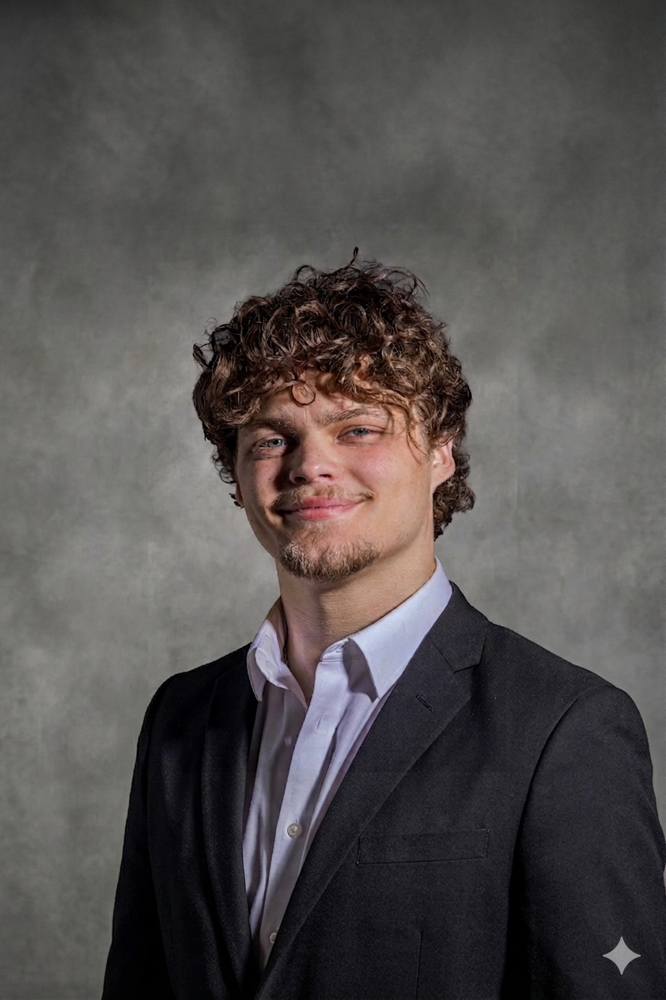
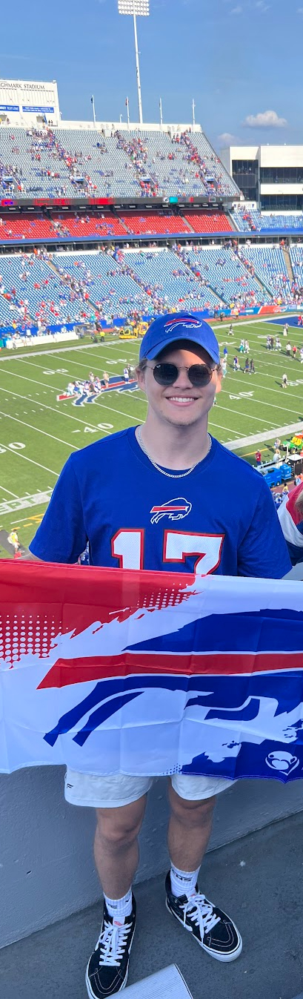

Casey Blunt
Hello There! welcome to my portfolio
Languages & TOols
C#, C++, Java, JavaScript, HTML, CSS and more
Unity, UE5, Figma, AI Agents
Soft Skills
Problem solver
Team Player
Communication
Development Methodologies

I am an alumni from RIT, graduated with a BS in Game Design and Development. I am a team-oriented creative problem solver that is driven and hard working. I have a passion for design, UX, programming, and art.
ABOUT Me
I am a recent graduate from the Rochester Institute of Technology with a BS in Game Design and Development from the Golisano College of Computing and Information Science. Growing up, I had always had a fascination with games. Similar to books or movies, they transported me somewhere exciting. However, games had one key difference- they were interactive. The ability to influence the events of a world, rather than just observing it was something I quickly fell in love with. Games of all kinds would be a huge part of my adolescence, but little did I know they would act as a segway into my career choice.
As I grew up, I got introduced to more than just playing games, but designing and coding them. I loved the idea of being able to tailor an experience that would be just as impactful to someone else as they were to me growing up. In high school, I took every computing class available, learning lots of different skills and coding languages. This continued in college, giving me an even more nuanced and refined arsenal to create. My major, however, offered more than just coding skills- I was taught how to design. I have always prided myself on being a creative and social person, often leading or managing group projects and having no issue with meeting new people. The GDD major at RIT empowered me to learn about how to harness my creative energy and love for technology and development to design programs, experiences, UI, and games that are user-friendly and approachable. Throughout my time at RIT, I have worked on a variety of projects, including games (both physical and digital), web applications, design mockups, and more!
As I grew up, I got introduced to more than just playing games, but designing and coding them. I loved the idea of being able to tailor an experience that would be just as impactful to someone else as they were to me growing up. In high school, I took every computing class available, learning lots of different skills and coding languages. This continued in college, giving me an even more nuanced and refined arsenal to create. My major, however, offered more than just coding skills- I was taught how to design. I have always prided myself on being a creative and social person, often leading or managing group projects and having no issue with meeting new people. The GDD major at RIT empowered me to learn about how to harness my creative energy and love for technology and development to design programs, experiences, UI, and games that are user-friendly and approachable. Throughout my time at RIT, I have worked on a variety of projects, including games (both physical and digital), web applications, design mockups, and more!
Education
Wyoming High School (2018-2022) - High School Diploma
Cincinnati, Ohio
Cincinnati, Ohio
I went to high school in a small but tight-knit community in the suburbs of Cincinnati. Here I began my computing journey, working hard to set myself up for a successful college career. I graduated with a 4.2 weighted GPA with multiple Honors and AP classes under my belt. It was here where I found my love for computing.
Rochester Institute of Technology (2022-2026) - BS in Game Design & Development
Rochester, New York
Rochester, New York
RIT is where I truly sharpened not only my computing skills, but my time management, leadership, and interpersonal skills. I was involved in multiple clubs including managing the RIT Esports Collegiate Halo team, was a performing arts scholar, and made dean's list over 3 separate years. I also was involved in greek Life, joining Sigma Chi's Lambda Kappa chapter in 2024. Throughout my time in Sigma Chi, I have learned leadership skills, being accountable for myself, networking, community service, philanthropy through Sigma Chi Derby Days, and so much more. I graduated RIT with a GPA of 3.25 and an immersion in Music.
My Projects
From Scripting to sketching

Check out My resume!